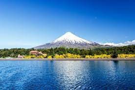

DESTINOS TURÍSTICOS A CONOCER |

Videos |

Ubicaciones |
DESTINOS TURÍSTICOS A CONOCER |
Videos |
Ubicaciones |
|  |
El Volcán Osorno es un estratovolcán del sur de Chile que se encuentra en la cordillera de los Andes, al este del lago Llanquihue.
Es conocido mundialmente por los paisajes que otorga al ser la puerta de entrada a la Patagonia chilena, siendo el icono visual natural
más reconocible de la Región de los Lagos. |

|
El lago de Todos los Santos es una masa de agua superficial ubicada en la
X Región de Los Lagos, Chile, a 96 km al noreste de la capital
regional Puerto Montt y 76 km al este de la ciudad de Puerto Varas,
dentro de los confines del parque nacional Vicente Pérez Rosales. |

|
Isla de Pascua (en idioma rapanui: Rapa Nui, literalmente 'Rapa Grande') es una isla de Chile, perteneciente a la región de Valparaíso, ubicada en la Polinesia, Oceanía, en medio del océano Pacífico a 3700 kilómetros de Caldera.Tiene una superficie de 163,6 km², lo que la convierte en la mayor de las islas del llamado Chile insular, y una población de 7750 habitantes, concentrados en Hanga Roa, capital y único poblado existente en la isla. La tierra habitada más cercana es el territorio británico de las islas Pitcairn, a unos 2000 km al oeste. La isla es uno de los principales destinos turísticos del país debido a su naturaleza y la cultura ancestral de la etnia rapanui, cuyo más notable vestigio corresponde a enormes estatuas antropomorfas conocidas como moái. Para preservar dichas características el pueblo 'Rapanui' administra desde 2016 el parque nacional Rapa Nui a través de la Comunidad Indígena Polinésica Ma'u Henua, mientras que la Unesco declaró este parque como Patrimonio de la Humanidad en 1995. |

|
El Parque nacional Torres del Paine es una de las áreas silvestres protegidas más importantes de Chile. Se encuentra ubicado entre la Cordillera de los Andes y la estepa Patagónica, en la Comuna de Torres del Paine, provincia de Última Esperanza, entre los 51° de latitud sur y 72° 57' de longitud oeste, distante unos 60 km de Puerto Natales y a 301.2 km de Punta Arenas. Fue creada el año 1959 y es administrada por la Corporación Nacional Forestal. Con un territorio de 227 298 hectáreas, comprende la cordillera Paine y su famoso macizo, que incluye las cumbres Paine Grande y sus conocidas torres, que le otorgan su nombre. En su interior se encuentran una gran variedad de hitos geográficos naturales como valles, el río Paine, los lagos Grey, Pehoé, Nordenskjöld y Sarmiento, y los glaciares Grey, Pingo y Tyndall, pertenecientes al Campo de Hielo Patagónico Sur. A contar del año 1978, el área fue incorporada como reserva de la biosfera por la UNESCO. |